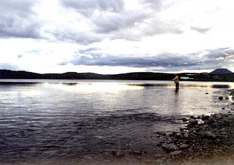

The Denali highway is all dirt for about 160 miles. Twisting through the tundra with huge mountains on either side of us. I felt like a peon compared to the size of everything. All of a sudden there was snow and it took about 100 feet for me to get my bike under control and before I slammed in to the back of Jay's bike. It was the close call of the day. We ate at a home cooking gas station. We traveled up into Denali national park to see mount McKinley. It didn't seem that big. I ran out of gas three times getting back out of the park. Jay wins the famous quote of the trip award, "Be careful, the moose come out at 7:30". We were miserable, cold, wet and tired. Poured all night long.